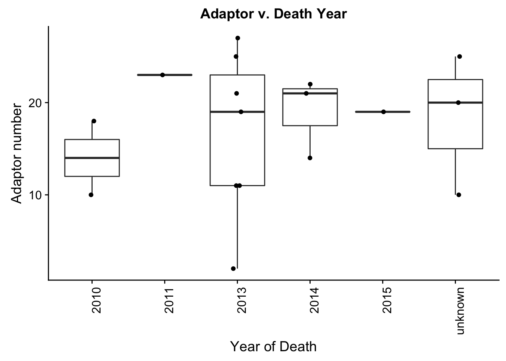

Last updated: 2018-04-13
Code version: 7b9810c
The goal of this analysis is to assign batches to the second round of tissues.
# Load data
chimp_info <- read.csv("../data/Information_RNA_DNA_Extractions.csv", header = T, stringsAsFactors = FALSE)
chimp_info <- chimp_info[,1:11]
dim(chimp_info)[1] 17 11head(chimp_info) Sample Sample.Name Age Date.of.birth Yeart.of.death
1 389 Rogger 35 1/1/69 2014
2 503 Carmichael 29 3/21/83 2010
3 554 Anja 34 1/9/80 2015
4 676 Callie 22 2/18/91 2014
5 724 Kerri 15 1/2/95 2010
6 529 Justin 25 unknown unknown
Date.of.death.Collection.date Hours.postmortem Date.shipped Site Sex
1 1/17/14 0.00 1/22/14 Yerkes M
2 9/29/10 0.00 11/9/10 Yerkes M
3 2/3/15 1.00 2/11/15 Yerkes F
4 2/18/14 2.00 11/19/14 Yerkes F
5 9/28/10 0.00 9/28/10 Yerkes F
6 unknown unknown unknown Yerkes M
Precaution
1 none
2 none
3 none
4 none
5 none
6 none# Load libraries
library(ggplot2)
library(cowplot)
Attaching package: 'cowplot'The following object is masked from 'package:ggplot2':
ggsavelibrary(rsample)Loading required package: broomLoading required package: tidyr
Attaching package: 'rsample'The following object is masked from 'package:tidyr':
fillsummary(chimp_info) Sample Sample.Name Age
Length:17 Length:17 Length:17
Class :character Class :character Class :character
Mode :character Mode :character Mode :character
Date.of.birth Yeart.of.death Date.of.death.Collection.date
Length:17 Length:17 Length:17
Class :character Class :character Class :character
Mode :character Mode :character Mode :character
Hours.postmortem Date.shipped Site
Length:17 Length:17 Length:17
Class :character Class :character Class :character
Mode :character Mode :character Mode :character
Sex Precaution
Length:17 Length:17
Class :character Class :character
Mode :character Mode :character #chimp_info$Age <- as.numeric(chimp_info$Age)
#chimp_info$Age[is.na(chimp_info$Age)] <- "Unknown"
#chimp_info$Yeart.of.death <- as.numeric(chimp_info$Yeart.of.death)
#chimp_info$Hours.postmortem <- as.numeric(chimp_info$Hours.postmortem)
age_plot <- ggplot(chimp_info, aes(x = Age)) +geom_bar() + ylab("Number of chimps")+ggtitle("Age of chimps")
plot_grid(age_plot)birth_plot <- ggplot(chimp_info, aes(x = Yeart.of.death)) +geom_bar() + xlab("Year of death") + ylab("Number of chimps")+ggtitle("Year of death (proxy for length of tissue storage)")
plot_grid(birth_plot)postmortem_plot <- ggplot(chimp_info, aes(x = Hours.postmortem)) +geom_bar() + xlab("Postmortem tissue collection (hours)") + ylab("Number of chimps")+ggtitle("When tissues were collected postmortem")
plot_grid(postmortem_plot)location_plot <- ggplot(chimp_info, aes(x = Site)) +geom_bar() + xlab("Location of chimps") + ylab("Number of chimps")+ggtitle("Site location")
plot_grid(location_plot)sex_plot <- ggplot(chimp_info, aes(x = Sex)) +geom_bar() + xlab("Sex") + ylab("Number of chimps")+ggtitle("Sex")
plot_grid(sex_plot)disease_plot <- ggplot(chimp_info, aes(x = Precaution)) +geom_bar() + xlab("Disease status") + ylab("Number of chimps")+ggtitle("Disease status")
plot_grid(disease_plot)chimp_info$ID <- seq.int(nrow(chimp_info))
set.seed(1234)
## 50% of the sample size
smp_size <- floor(0.50 * nrow(chimp_info))
make_batches <- sample(seq_len(nrow(chimp_info)), size = smp_size)
chimp_info$ID <- chimp_info$ID %in% make_batches
chimp_info$ID[chimp_info$ID == "TRUE"] <- "1"
chimp_info$ID[chimp_info$ID == "FALSE"] <- "2"
age_plot <- ggplot(chimp_info, aes(x = Age)) + facet_wrap(~chimp_info$ID) + geom_bar() + ylab("Number of chimps")+ggtitle("Age of chimps")
plot_grid(age_plot)birth_plot <- ggplot(chimp_info, aes(x = Yeart.of.death)) + facet_wrap(~chimp_info$ID) +geom_bar() + xlab("Year of death") + ylab("Number of chimps")+ggtitle("Year of death (proxy for length of tissue storage)")
plot_grid(birth_plot)postmortem_plot <- ggplot(chimp_info, aes(x = Hours.postmortem)) + facet_wrap(~chimp_info$ID) +geom_bar() + xlab("Postmortem tissue collection (hours)") + ylab("Number of chimps")+ggtitle("When tissues were collected postmortem")
plot_grid(postmortem_plot)location_plot <- ggplot(chimp_info, aes(x = Site)) + facet_wrap(~chimp_info$ID)+geom_bar() + xlab("Location of chimps") + ylab("Number of chimps")+ggtitle("Site location")
plot_grid(location_plot)sex_plot <- ggplot(chimp_info, aes(x = Sex)) + facet_wrap(~chimp_info$ID) +geom_bar() + xlab("Disease status") + ylab("Number of chimps")+ggtitle("Disease status")
plot_grid(sex_plot)disease_plot <- ggplot(chimp_info, aes(x = Precaution)) + facet_wrap(~chimp_info$ID) +geom_bar() + xlab("Disease status") + ylab("Number of chimps")+ggtitle("Disease status")
plot_grid(disease_plot)chimp_seeds <- array(NA, dim = c(6, 10))
i = 1
for (i in 1:ncol(chimp_seeds)){
set.seed(i)
chimp_info$ID <- seq.int(nrow(chimp_info))
## 50% of the sample size
smp_size <- floor(0.50 * nrow(chimp_info))
make_batches <- sample(seq_len(nrow(chimp_info)), size = smp_size)
chimp_info$ID <- chimp_info$ID %in% make_batches
chimp_info$ID[chimp_info$ID == "TRUE"] <- "0"
chimp_info$ID[chimp_info$ID == "FALSE"] <- "1"
chimp_info$ID <- as.numeric(chimp_info$ID)
#chimp_check <- c(3, 5, 7, 9, 10, 11, 12)
#model <- glm(ID ~ Age,family=binomial(link='logit'),data=chimp_info)
chimp_info$Yeart.of.death <- as.numeric(chimp_info$Yeart.of.death)
chimp_info$Hours.postmortem <- as.numeric(chimp_info$Hours.postmortem)
chimp_info$Age <- as.numeric(chimp_info$Age)
Site <- as.numeric(as.factor(chimp_info$Site))
Sex <- as.numeric(as.factor(chimp_info$Sex))
chimp_info$Precaution[chimp_info$Precaution == "none"] <- 1
chimp_info$Precaution[chimp_info$Precaution == "HCV+"] <- 2
chimp_info$Precaution[chimp_info$Precaution == "HBV+"] <- 3
chimp_info$Precaution[chimp_info$Precaution == "HCV exposure, HBV+"] <- 3
chimp_info$Precaution[chimp_info$Precaution == "HIV exposure, tested neg."] <- 4
Precaution <- as.numeric(chimp_info$Precaution)
chimp_seeds[1,i] <- cor(Sex, chimp_info$ID, use="pairwise.complete.obs")
chimp_seeds[2,i] <- cor(Precaution, chimp_info$ID, use="pairwise.complete.obs")
chimp_seeds[3,i] <- cor(Site, chimp_info$ID, use="pairwise.complete.obs")
chimp_seeds[4,i] <- cor(chimp_info$Age, chimp_info$ID, use="pairwise.complete.obs")
chimp_seeds[5,i] <- cor(chimp_info$Yeart.of.death, chimp_info$ID, use="pairwise.complete.obs")
chimp_seeds[6,i] <- cor(chimp_info$Hours.postmortem, chimp_info$ID, use="pairwise.complete.obs")
}Warning: NAs introduced by coercion
Warning: NAs introduced by coercion
Warning: NAs introduced by coercionset.seed(4)
chimp_info <- read.csv("../data/Information_RNA_DNA_Extractions.csv", header = T, stringsAsFactors = FALSE)
chimp_info <- chimp_info[,1:11]
chimp_info$ID <- seq.int(nrow(chimp_info))
## 50% of the sample size
smp_size <- floor(0.50 * nrow(chimp_info))
make_batches <- sample(seq_len(nrow(chimp_info)), size = smp_size)
chimp_info$ID <- chimp_info$ID %in% make_batches
chimp_info$ID[chimp_info$ID == "TRUE"] <- "1"
chimp_info$ID[chimp_info$ID == "FALSE"] <- "2"
age_plot <- ggplot(chimp_info, aes(x = Age)) + facet_wrap(~chimp_info$ID) + geom_bar() + ylab("Number of chimps")+ggtitle("Age of chimps")
plot_grid(age_plot)birth_plot <- ggplot(chimp_info, aes(x = Yeart.of.death)) + facet_wrap(~chimp_info$ID) +geom_bar() + xlab("Year of death") + ylab("Number of chimps")+ggtitle("Year of death (proxy for length of tissue storage)")
plot_grid(birth_plot)postmortem_plot <- ggplot(chimp_info, aes(x = Hours.postmortem)) + facet_wrap(~chimp_info$ID) +geom_bar() + xlab("Postmortem tissue collection (hours)") + ylab("Number of chimps")+ggtitle("When tissues were collected postmortem")
plot_grid(postmortem_plot)location_plot <- ggplot(chimp_info, aes(x = Site)) + facet_wrap(~chimp_info$ID)+geom_bar() + xlab("Location of chimps") + ylab("Number of chimps")+ggtitle("Site location")
plot_grid(location_plot)sex_plot <- ggplot(chimp_info, aes(x = Sex)) + facet_wrap(~chimp_info$ID) +geom_bar() + xlab("Disease status") + ylab("Number of chimps")+ggtitle("Disease status")
plot_grid(sex_plot)disease_plot <- ggplot(chimp_info, aes(x = Precaution)) + facet_wrap(~chimp_info$ID) +geom_bar() + xlab("Disease status") + ylab("Number of chimps")+ggtitle("Disease status") + theme(axis.text.x = element_text(angle = 90, hjust = 1))
plot_grid(disease_plot)# Manually change sample 13 from batch 2 to 1 (to spread out the HCV+)
chimp_info$ID[13] <- "1"
# Manually change sample 9 from batch 1 to 2 (to spread out the HBV+)
chimp_info$ID[11] <- "2"
# If insistent on sample # of males and females
chimp_info$ID[6] <- "1"
chimp_info$ID[17] <- "1"
age_plot <- ggplot(chimp_info, aes(x = Age)) + facet_wrap(~chimp_info$ID) + geom_bar() + ylab("Number of chimps")+ggtitle("Age of chimps")
plot_grid(age_plot)birth_plot <- ggplot(chimp_info, aes(x = Yeart.of.death)) + facet_wrap(~chimp_info$ID) +geom_bar() + xlab("Year of death") + ylab("Number of chimps")+ggtitle("Year of death (proxy for length of tissue storage)")
plot_grid(birth_plot)postmortem_plot <- ggplot(chimp_info, aes(x = Hours.postmortem)) + facet_wrap(~chimp_info$ID) +geom_bar() + xlab("Postmortem tissue collection (hours)") + ylab("Number of chimps")+ggtitle("When tissues were collected postmortem")
plot_grid(postmortem_plot)location_plot <- ggplot(chimp_info, aes(x = Site)) + facet_wrap(~chimp_info$ID)+geom_bar() + xlab("Location of chimps") + ylab("Number of chimps")+ggtitle("Site location") + theme(axis.text.x = element_text(angle = 90, hjust = 1))
plot_grid(location_plot)sex_plot <- ggplot(chimp_info, aes(x = Sex)) + facet_wrap(~chimp_info$ID) +geom_bar() + xlab("Sex") + ylab("Number of chimps")+ggtitle("Sex")
plot_grid(sex_plot)disease_plot <- ggplot(chimp_info, aes(x = Precaution)) + facet_wrap(~chimp_info$ID) +geom_bar() + xlab("Disease status") + ylab("Number of chimps")+ggtitle("Disease status") + theme(axis.text.x = element_text(angle = 90, hjust = 1))
plot_grid(disease_plot)chimp_info$ID [1] "1" "2" "2" "1" "1" "1" "2" "1" "2" "1" "2" "2" "1" "1" "2" "2" "1"We have 12 adaptors for 17 samples: adaptors 2, 10, 11, 14, 18, 19, 20, 21, 22, 23, 25, 27.
adaptor_number <- c(2, 10, 11, 14, 18, 19, 20, 21, 22, 23, 25, 27)
for (i in 1:10){
set.seed(i)
sample_order <- sample(seq_len(length(adaptor_number)), size = length(adaptor_number))
print(sample_order)
} [1] 4 5 6 9 2 7 10 12 3 1 11 8
[1] 3 8 6 2 11 7 1 5 9 4 12 10
[1] 3 9 4 12 5 8 1 2 11 7 10 6
[1] 8 1 3 10 7 2 5 6 4 11 12 9
[1] 3 8 10 12 1 5 4 7 6 11 9 2
[1] 8 11 3 4 7 12 6 9 10 1 2 5
[1] 12 5 2 1 10 6 3 11 9 8 4 7
[1] 6 3 8 12 11 9 2 5 4 7 1 10
[1] 3 1 12 2 4 11 10 9 6 8 7 5
[1] 7 4 5 12 1 2 9 6 3 10 11 8for (i in 1:10){
set.seed(i)
sample_order <- sample(seq_len(length(adaptor_number)), size = nrow(chimp_info)-length(adaptor_number))
print(sample_order)
}[1] 4 5 6 9 2
[1] 3 8 6 2 11
[1] 3 9 4 12 5
[1] 8 1 3 10 7
[1] 3 8 10 12 1
[1] 8 11 3 4 7
[1] 12 5 2 1 10
[1] 6 3 8 12 11
[1] 3 1 12 2 4
[1] 7 4 5 12 1make_order <- c(4, 5, 6, 9, 2, 7, 10, 12, 3, 1, 11, 8, 3, 8, 6, 2, 11)
for (i in 1:nrow(chimp_info)){
chimp_info$adaptor[i] <- adaptor_number[make_order[i]]
}
adaptor_plot <- ggplot(chimp_info, aes(x = adaptor)) +geom_bar() + xlab("Adaptor number") + ylab("Number of chimps")+ggtitle("Distribution of adaptors")
plot_grid(adaptor_plot)batch_plot <- ggplot(chimp_info, aes(x = ID, y = adaptor)) + geom_boxplot() + geom_jitter(width = 0.06, height = 0) + ylab("Adaptor number")+ggtitle("Adaptor v. Extraction batch")+xlab("Extraction batch")
plot_grid(batch_plot)batch_sex_plot <- ggplot(chimp_info, aes(x = Sex, y = adaptor)) + geom_boxplot() + geom_jitter(width = 0.06, height = 0) + ylab("Adaptor number")+ggtitle("Adaptor v. Sex")+xlab("Sex")
plot_grid(batch_sex_plot)batch_disease_plot <- ggplot(chimp_info, aes(x = Precaution, y = adaptor)) + geom_boxplot() + geom_jitter(width = 0.06, height = 0) + ylab("Adaptor number")+ggtitle("Adaptor v. Disease")+xlab("Disease") + theme(axis.text.x = element_text(angle = 90, hjust = 1))
plot_grid(batch_disease_plot)batch_location_plot <- ggplot(chimp_info, aes(x = Site, y = adaptor)) + geom_boxplot() + geom_jitter(width = 0.06, height = 0) + ylab("Adaptor number")+ggtitle("Adaptor v. Site")+xlab("Site") + theme(axis.text.x = element_text(angle = 90, hjust = 1))
plot_grid(batch_location_plot)batch_death_plot <- ggplot(chimp_info, aes(x = Hours.postmortem, y = adaptor)) + geom_boxplot() + geom_jitter(width = 0.06, height = 0) + ylab("Adaptor number")+ggtitle("Adaptor v. Hours postmortem")+xlab("Hours") + theme(axis.text.x = element_text(angle = 90, hjust = 1))
plot_grid(batch_death_plot)batch_collection_plot <- ggplot(chimp_info, aes(x = Yeart.of.death, y = adaptor)) + geom_boxplot() + geom_jitter(width = 0.06, height = 0) + ylab("Adaptor number")+ggtitle("Adaptor v. Death Year")+xlab("Year of Death") + theme(axis.text.x = element_text(angle = 90, hjust = 1))
plot_grid(batch_collection_plot)
batch_collection_plot <- ggplot(chimp_info, aes(x = Age, y = adaptor)) + geom_boxplot() + geom_jitter(width = 0.06, height = 0) + ylab("Adaptor number")+ggtitle("Adaptor v. Age")+xlab("Age") + theme(axis.text.x = element_text(angle = 90, hjust = 1))
plot_grid(batch_collection_plot)as.data.frame(cbind(chimp_info$Sample, chimp_info$Sample.Name, chimp_info$adaptor), stringsAsFactors = FALSE) V1 V2 V3
1 389 Rogger 14
2 503 Carmichael 18
3 554 Anja 19
4 676 Callie 22
5 724 Kerri 10
6 529 Justin 20
7 4x0354 <NA> 23
8 4x0212 <NA> 27
9 4X0267 <NA> 11
10 4X0333 <NA> 2
11 4X0339 <NA> 25
12 4X0357 <NA> 21
13 4X0550 <NA> 11
14 537 Socrates 21
15 558 Cynthia 19
16 495 Amos 10
17 Little_R Little Rock Chimp 25sessionInfo()R version 3.4.3 (2017-11-30)
Platform: x86_64-apple-darwin15.6.0 (64-bit)
Running under: OS X El Capitan 10.11.6
Matrix products: default
BLAS: /Library/Frameworks/R.framework/Versions/3.4/Resources/lib/libRblas.0.dylib
LAPACK: /Library/Frameworks/R.framework/Versions/3.4/Resources/lib/libRlapack.dylib
locale:
[1] en_US.UTF-8/en_US.UTF-8/en_US.UTF-8/C/en_US.UTF-8/en_US.UTF-8
attached base packages:
[1] stats graphics grDevices utils datasets methods base
other attached packages:
[1] rsample_0.0.2 tidyr_0.7.2 broom_0.4.3 cowplot_0.9.2 ggplot2_2.2.1
loaded via a namespace (and not attached):
[1] tidyselect_0.2.3 purrr_0.2.4 reshape2_1.4.3
[4] kernlab_0.9-25 splines_3.4.3 lattice_0.20-35
[7] colorspace_1.3-2 htmltools_0.3.6 yaml_2.1.18
[10] prodlim_1.6.1 survival_2.41-3 rlang_0.1.6
[13] pillar_1.1.0 foreign_0.8-69 glue_1.2.0
[16] bindrcpp_0.2 bindr_0.1 plyr_1.8.4
[19] lava_1.6 dimRed_0.1.0 robustbase_0.92-8
[22] stringr_1.3.0 timeDate_3043.102 munsell_0.4.3
[25] gtable_0.2.0 recipes_0.1.2 psych_1.7.8
[28] evaluate_0.10.1 labeling_0.3 knitr_1.20
[31] parallel_3.4.3 class_7.3-14 DEoptimR_1.0-8
[34] Rcpp_0.12.15 scales_0.5.0 backports_1.1.2
[37] ipred_0.9-6 CVST_0.2-1 mnormt_1.5-5
[40] digest_0.6.15 stringi_1.1.7 dplyr_0.7.4
[43] RcppRoll_0.2.2 ddalpha_1.3.1.1 grid_3.4.3
[46] rprojroot_1.3-2 tools_3.4.3 magrittr_1.5
[49] lazyeval_0.2.1 tibble_1.4.2 DRR_0.0.3
[52] pkgconfig_2.0.1 MASS_7.3-48 Matrix_1.2-13
[55] lubridate_1.7.1 gower_0.1.2 assertthat_0.2.0
[58] rmarkdown_1.9 rpart_4.1-12 R6_2.2.2
[61] nnet_7.3-12 sfsmisc_1.1-2 nlme_3.1-131
[64] git2r_0.21.0 compiler_3.4.3 This R Markdown site was created with workflowr